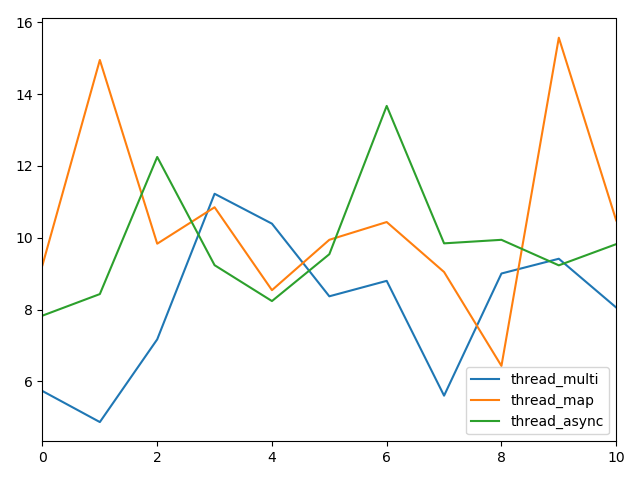
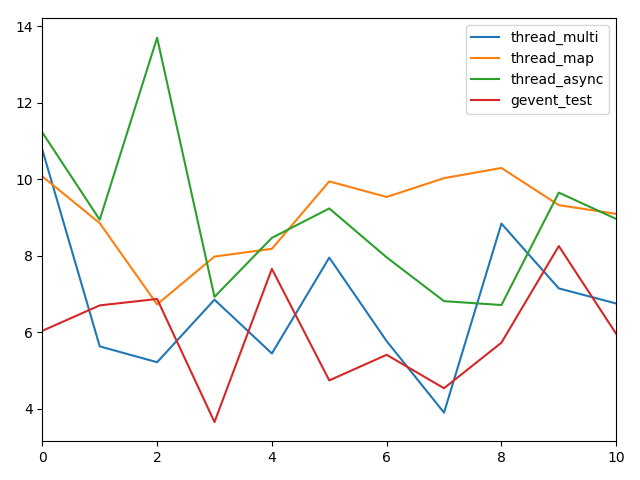
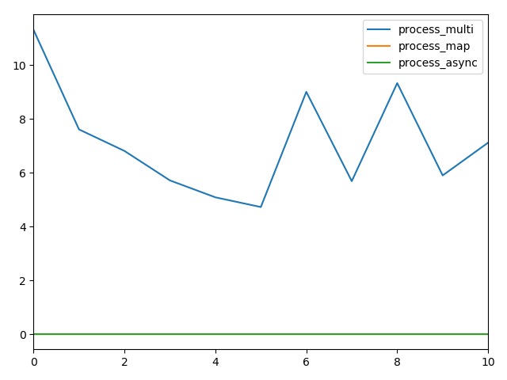

python进阶11并发之七多种并发方式的效率测试
测试map,apply_async,gevent协程爬虫
测试代码:网页爬虫
函数代码
def thread_multi():
threads = list()
for url in urls:
threads.append(threading.Thread(target=process, args=(url,)))
[t.start() for t in threads]
[t.join() for t in threads]
def thread_map():
pool = ThreadPool(max(1, cpu_count() - 1))
results = pool.map(process, urls)
pool.close()
pool.join()
print(results)
def thread_async():
pool = ThreadPool(max(1, cpu_count() - 1))
results = list()
for url in urls:
results.append(pool.apply_async(process, args=(url,)))
pool.close()
pool.join()
print([result.get() for result in results])
def process_multi():
processes = list()
for url in urls:
processes.append(Process(target=process, args=(url,)))
[t.start() for t in processes]
[t.join() for t in processes]
def process_map():
pool = Pool(processes=max(1, cpu_count() - 1))
results = pool.map(process, urls)
pool.close()
pool.join()
print(results)
def process_async():
pool = Pool(processes=max(1, cpu_count() - 1))
results = list()
for url in urls:
results.append(pool.apply_async(process, (url,)))
pool.close()
pool.join()
print([result.get() for result in results])
测试结果concurrentOpt


| thread_multi | thread_map | thread_async | process_multi | process_map | process_async | |
|---|---|---|---|---|---|---|
| 0 | 5.732065 | 9.236784 | 7.831096 | 9.954077 | 9.778723 | 12.086315 |
| 1 | 4.868261 | 14.948347 | 8.431347 | 9.679722 | 17.086732 | 6.354689 |
| 2 | 7.17074 | 9.833528 | 12.248446 | 6.584711 | 17.405191 | 17.600024 |
| 3 | 11.223755 | 10.848167 | 9.235662 | 6.841372 | 9.969995 | 11.37249 |
| 4 | 10.391303 | 8.540373 | 8.236726 | 10.971645 | 8.964562 | 9.265784 |
| 5 | 8.3693 | 9.942565 | 9.541138 | 8.789822 | 8.266148 | 10.571744 |
| 6 | 8.799133 | 10.436757 | 13.669565 | 10.497021 | 9.668785 | 10.168379 |
| 7 | 5.603222 | 9.04568 | 9.843495 | 4.587275 | 14.596141 | 10.470989 |
| 8 | 9.003843 | 6.43141 | 9.941858 | 4.738146 | 8.170778 | 9.773284 |
| 9 | 9.414749 | 15.56822 | 9.23152 | 8.254023 | 8.781076 | 14.082026 |
| 10 | 8.0576371 | 10.4831831 | 9.8210853 | 8.0897814 | 11.2688131 | 11.1745724 |
最后一行为均值
测试结果concurrentOptGevent


| thread_multi | thread_map | thread_async | process_multi | process_map | process_async | gevent_test | |
|---|---|---|---|---|---|---|---|
| 0 | 10.770623 | 10.072167 | 11.220298 | 11.308327 | 3.40E-05 | 1.00E-05 | 6.035623 |
| 1 | 5.628367 | 8.850531 | 8.939288 | 7.608235 | 3.20E-05 | 1.00E-05 | 6.700398 |
| 2 | 5.214341 | 6.726455 | 13.69806 | 6.808565 | 3.20E-05 | 1.10E-05 | 6.868222 |
| 3 | 6.849362 | 7.976406 | 6.922554 | 5.7132 | 1.70E-05 | 5.00E-06 | 3.650169 |
| 4 | 5.442727 | 8.179533 | 8.46556 | 5.084351 | 3.00E-05 | 1.10E-05 | 7.655325 |
| 5 | 7.949327 | 9.9421 | 9.234288 | 4.723601 | 3.30E-05 | 1.00E-05 | 4.739602 |
| 6 | 5.765848 | 9.534865 | 7.956348 | 9.004707 | 2.00E-05 | 6.00E-06 | 5.40825 |
| 7 | 3.89613 | 10.026686 | 6.81114 | 5.685556 | 3.60E-05 | 1.00E-05 | 4.534598 |
| 8 | 8.838316 | 10.292949 | 6.709802 | 9.328648 | 1.80E-05 | 5.00E-06 | 5.724812 |
| 9 | 7.144312 | 9.321319 | 9.64821 | 5.898414 | 3.30E-05 | 1.00E-05 | 8.251311 |
| 10 | 6.7499353 | 9.0923011 | 8.9605548 | 7.1163604 | 2.85E-05 | 8.80E-06 | 5.956831 |
最后一行为均值
总结
| concurrentOpt | 进程or线程 | 同步or异步(不大确定) | 阻塞or非阻塞(不大确定) | 平均时间 |
|---|---|---|---|---|
| thread_multi | 多线程 | 异步 | 非阻塞 | 8.0576371 |
| thread_map | 线程池 | (批)同步 | 阻塞 | 10.4831831 |
| thread_async | 线程池 | 异步 | 非阻塞 | 9.8210853 |
| process_multi | 多进程 | 异步 | 非阻塞 | 8.0897814 |
| process_map | 进程池 | （批）同步 | 阻塞 | 11.2688131 |
| process_async | 进程池 | 异步 | 非阻塞 | 11.1745724 |
| concurrentOptGevent | 进程or线程 | 同步or异步(不大确定) | 阻塞or非阻塞(不大确定) | 平均时间 |
|---|---|---|---|---|
| thread_multi | 多线程 | 异步 | 非阻塞 | 6.7499353 |
| thread_map | 线程池 | （批）同步 | 非阻塞 | 9.0923011 |
| thread_async | 线程池 | 异步 | 非阻塞 | 8.9605548 |
| process_multi | 多进程 | 异步 | 非阻塞 | 7.1163604 |
| process_map | 进程池 | （批）同步 | 非阻塞 | 卡住 |
| process_async | 进程池 | 异步 | 非阻塞 | 卡住 |
| gevent_test | 协程 | 异步 | 非阻塞 | 5.956831 |
结论:
01，启用gevent后，除了卡住的，线程和进程均加快1s左右时间
02，协程在线程程序中是最快的
03，多线程程序下载速度弱优于多进程
04，不论是进程还是线程，使用thread_async都快于map
05，不考虑协程时，多线程较线程池速度更快，多进程较进程池速度更快，这一点不大符合理论，个人感觉和url数量少有关.
至于进程池在启用gevent后卡住的问题，网上也没查到相关的靠谱资料，哪位大牛晓得的话，求解释～
测试代码:github的concurrentOpt.py和concurrentOptGevent.py